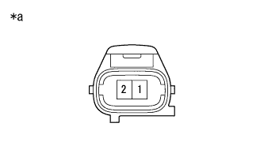

DTC P0340/12 cam position sensor system |
| DTC No. SAE/TCCS | DTC detection conditions
| Inspection site |
|---|---|---|
| P0340/12 |
|
|
|
|
reference.| Step 1 | Cam position sensor single inspection (resistance inspection) |
|  |
Cum position sensor connector B26 is separated.
Use SST (Toyota Electrical Tester) to measure resistance between terminals.
| Inspection terminal | Inspection condition | Reference value |
|---|---|---|
| 1-2 | 20 ° C | 1850 to 2450 ω |
| *a | Connector non -connection status (Cam position sensor) |
|
| ||||
| OK | |
| Step 2 | Wire harness and connector inspection (Engine Control Companator -Cam Posesisillon Sensa) |
reference.Cut the connector B36 of the engine control computer.
Cum position sensor connector B26 is separated.
Use SST (Toyota Electrical Tester) to measure resistance between terminals.(The terminal array isreference)
| Inspection terminal | Inspection condition | Reference value |
|---|---|---|
| B36-26 (G2+) --B26-1 (G2) | Always | Less than 1 Ω |
| B36-34 (NE-) --B26-2 (G-) | Always | Less than 1 Ω |
| Inspection terminal | Inspection condition | Reference value |
|---|---|---|
| B36-26 (G2+) and B26-1 (G2) -This between other terminals and body earth | Always | 10 kΩ or higher |
| B36-34 (NE-) and B26-2 (G-) -The between other terminals and body earth | Always | 10 kΩ or higher |
|
| ||||
| OK | |
| Step 3 | Sensor mounting unit inspection |
Check the bolt of the cam position sensor to tighten and mounting.
|
| ||||
| OK | |
| Step 4 | Camshaft single inspection (timing rotor section inspection) |
Check the uneven part (timing rotor part) and mounting status of the camshaft.
|
| ||||
| OK | |
| Step 5 | Valve timing adjustment inspection (timing chain loosening, tooth flying confirmation) |
reference)| to the next | |
| Step 6 | Diag code erasure |
Connect SST (Tascan) to DLC3.
Ig ON.
Erase the diag code according to the screen display of SST (Tascan).(The point isreference)
| to the next | |
| Step 7 | Diag code reading |
Connect SST (Tascan) to DLC3.
Perform a driving test.
Check the diag code according to the screen display of SST (Tascan).(The point isreference)
| result | Destination |
|---|---|
| Output P0340 | A |
| No output | B |
|
| ||||
| A | ||
| ||